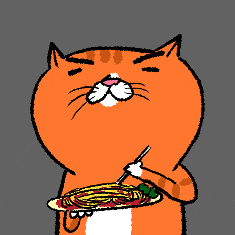

Lab 4 - Pseudocoding & Problem-Solving
Challenge
For this lab we had to come up with step by step processes for completing a couple tasks. The hardest part was coming up with which tasks we should do and then how detailed the intructions should be.
Problems
One problem that arose was how to format the sublist for each step in our pseudocode outline. I ended up creating an ordered list inside an ordered list and using CSS I made it so any ordered list inside an ordered list would use Roman numerals instead of numbers so it would be less confusing.
Reflection
I enjoyed working on this assignment with my partner. It felt like we were able to speed through it quickly, and then I spent some time sprucing up my page with colors and images.
Results
Pseudocode for Making Pasta from Scratch
- Get ingredients
- 2 cups of flour
- 2 large eggs
- 3 egg yolks
- Form pasta dough
- Make well with flour
- Add eggs to flour and mix with fork
- knead dough for 8-10 mins
- Let the dough rest for at least 30 minutes
- Roll out dough
- Using a pasta machine or rolling pin, roll the dough out lengthwise slightly
- On a lightly floured surface, fold the pasta dough in thirds
- Repeat these 2 steps until the pasta dough is smooth
- Now roll the dough out until it is around 1/16 inch thick
- Cut into pasta shape
- Cut pasta into sheets, around 12-14 inches long
- Dust both sides of the dough with flour
- After cutting to desired shape, stack pasta to the side and cover with a clean, dampened kitchen towel

Pseudocode for Go Fish

// Load players with 7 cards // Randomly load cards from the deck // Each card delt is removed from the deck // First player clicks card in hand wanting to be matched // Check if the other player has a matching card // If yes: give to player // If no: “go fish” message // Allow player to draw from random pile // Other player’s turn // Check for win condition // Win condition: when all cards in possession are pairs, player with most pairs wins